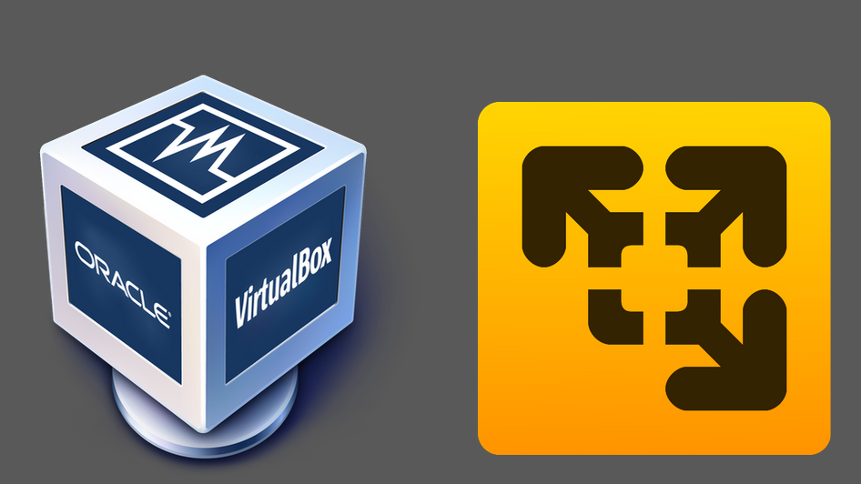
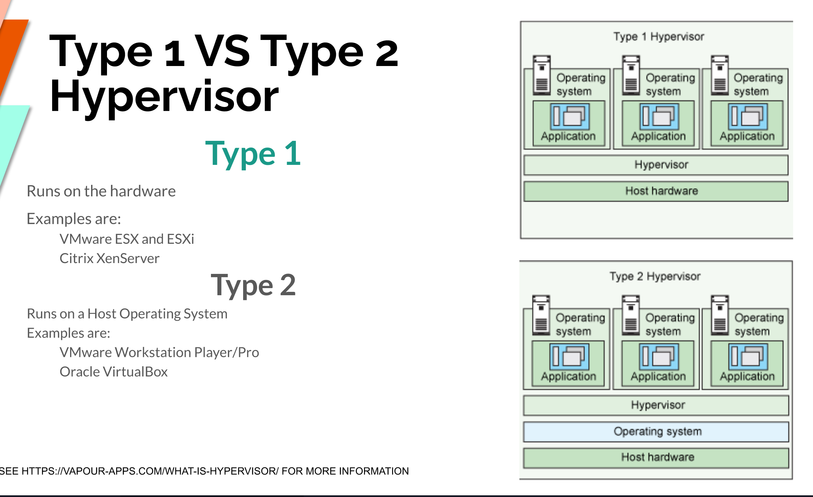
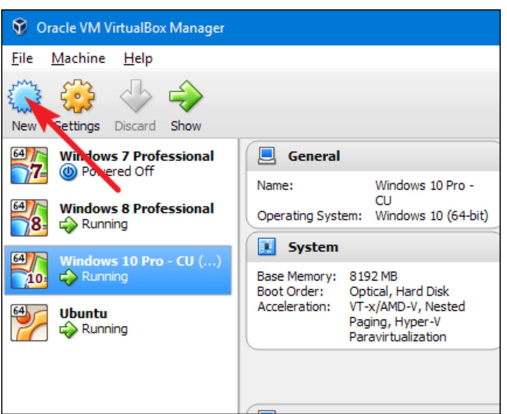
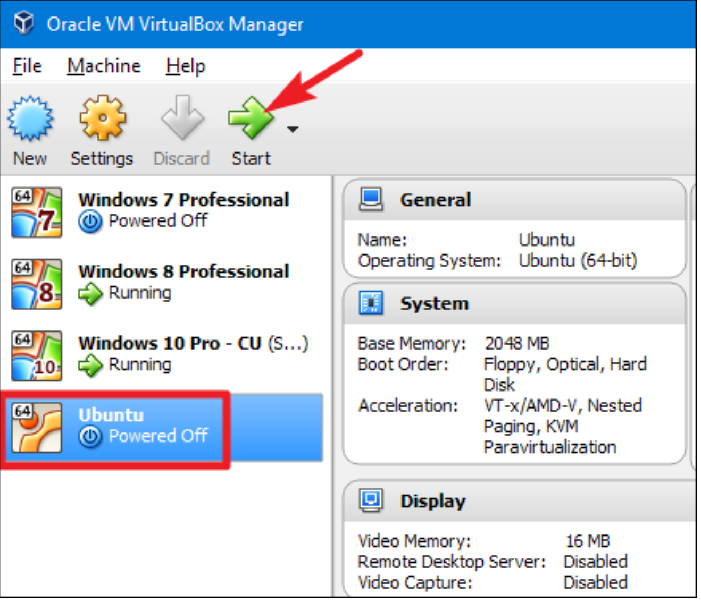
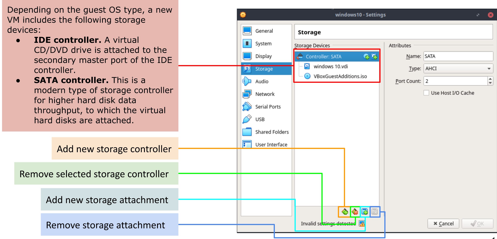
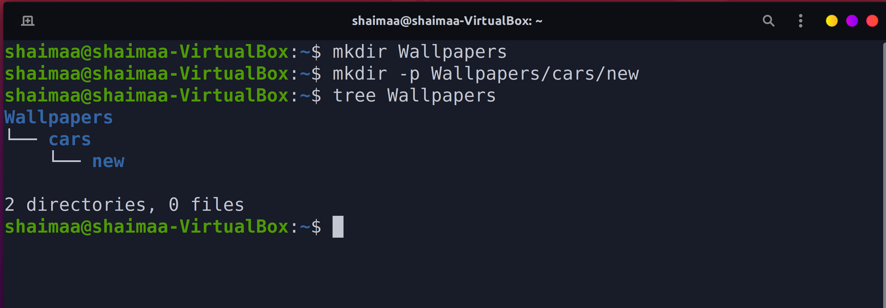

Deliverable 2
- Name: Shaimaa Husien
- Semester: Sp 2022
- Class: CIS 106
What is Virtualization

- Replication of hardware to simulate a virtual machine inside a physical machine.
Tow general types of virtualization:
server-side virtualization
- Virtual Desktop Infrastructure (VDI).
- Think client or fat client
- Thin client
- Zero client

clint-side virtualization:
- Software installed on a computer virtual machines
- Each VM has its own operating system installed
- For client-side virtualization.the computer needs:
Hypervisor :
- Software that allows the management of virtual machines
- Hardware support
- capable CPU
- Enough RAM
- Enough storage
Types of Hypervisor

Virtualbox
- VirtualBox is a powerful type 2 virtualization product for enterprise as well ass home use.
- Open source software under GPLversion 2
- Runs on: windows _ Linux _ Macintosh _ Solaris
- it is supports a large number f guest operating systems.
How to Install Virtualbox in Windows 10
- STep 1 : Download Virtualbox:
https://www.virtualbox.org/wiki/Downloads
1- Install VirtualBox
2- Get the Windows 10 Technical Preview ISO File.
3- Select the amount of RAM
4- Select a Virtual Hard Drive.
5- Create a virtual Hard Drive
6- Select your ISO as the startup disk
7- Finish installing windows 10
8- Turn on the start Menu.

Installing Ubuntu in a virtualBox
- Step 1: Open up your VM app and click the button to create a new virtual machine.

- You’ll be guided through the process by a wizard that first asks which OS you’ll be installing. If you type the name of the OS in the “Name” box, the app will most likely automatically select the type and version for the OS. If it doesn’t—or it guesses wrong—select those items yourself from the dropdown menus. When you’re done, click “Next.”
- step 2: Name and Operating system then "next"

- step 3: Memory Size
- step 4: Hard disk "create"
- step 5: File Location and Size "create"
- step 6: After that, you’re dumped back into the main VM app window, where your new VM should show up.installation media you need is available to the machine—usually this involves pointing to an ISO file or real disc through the VM’s settings. You can run your new VM by selecting it and hitting “Start.”



## Updating Ubuntu
- Two Ways:
- Using Ubuntu Software Update
- Using the command line
- Command :
sudo apt update;sudo apt upgrade-y;sudo apt full-upgrade-y

Installing software in Ubuntu
sudo+apt+install+package+name
- the install option installs the specified package.
- to install several program in single command.
sudo apt install firefox flame shot caffeine -y
- the remove option removes the specifies package.
*remove several program in single command
sudo apt remove firefox flame shot caffeine -y
- you can install and remove muliple program by adding the package name with a space between each package.
- you can add and remove package at the same time by using a +and -at the end each package.
- Searching foe software
- search for all program that matches the next in quotes
- search for information about a given package including dependencies.
- search a package name only.
- To remove and purge a package use:
sudo apt remove vlc
sudo apt purge vlc
sudo apt auto remove
Basic linux commands

Navigating the filesystem
- It's a program that takes in commands and passes them on to the computer's operating system to run. From the command line, you can navigating Filesystem. A filesystem organizes a computer's files and directories into a tree structure The first directory in the filesystem is the root directory.
managing files and Directories
mkdir:
Is used for creating directory or multiple directories.
Example:
- create a directory in the present working directory
- create directory a in a different directory using relative path
- create a directory in a diffident directory using absolute path
mkdir ~/wallpapers/forest
- create a directory with a space in the name
mkdir wallpapers/new\caremkdir wallpapers/"cities usa"
- create a directory with a single quote in the name
mkdir wallpapers/"majora 's mask"
- create multiple directories
mkdir wallpapers /care wallpapers/cities * wallpapers/forst
- create a directory with a parent directory at the same time
mkdir -p wallpapers_others/movies